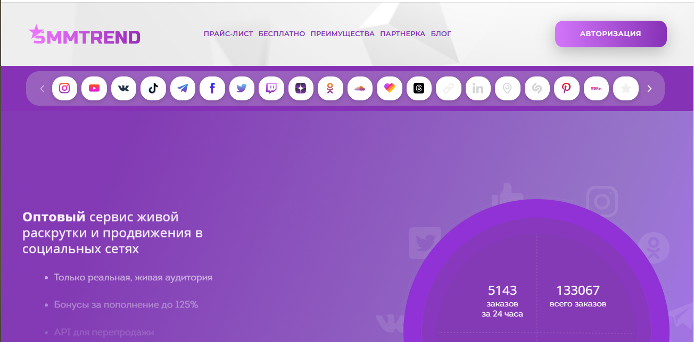
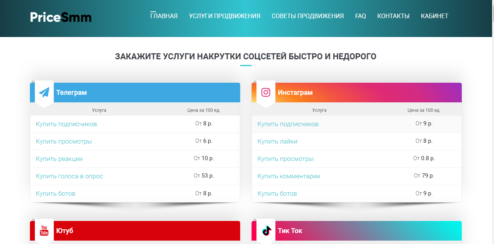
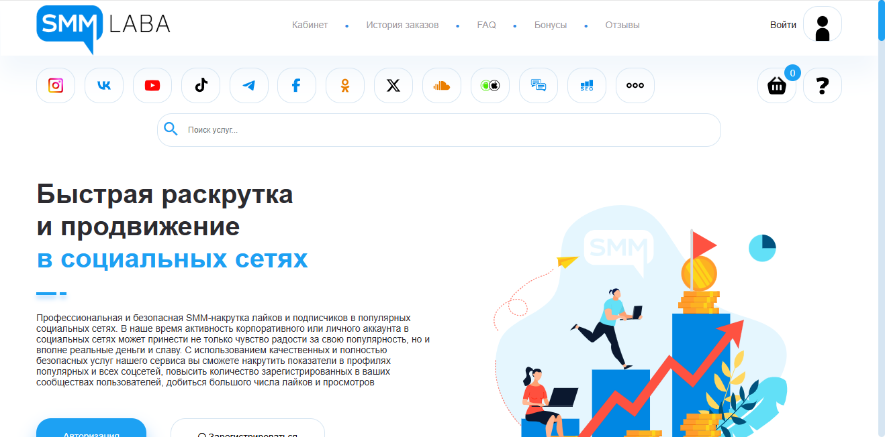
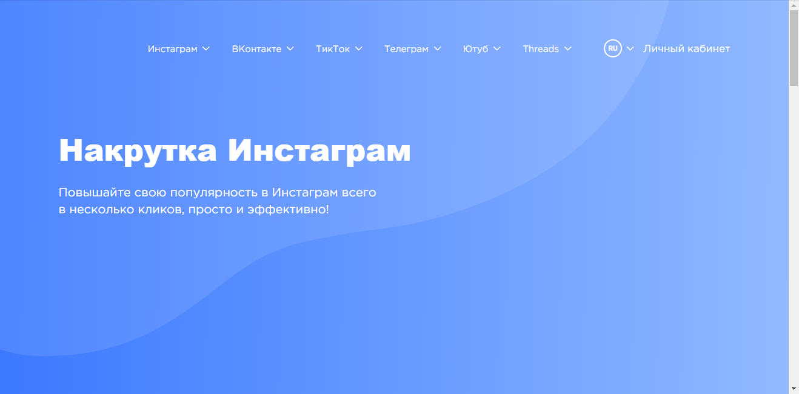

Наша редакция провела аналитическое исследование и составила рейтинг лучших сервисов по накрутке чата в Твич в 2025 году, которые продемонстрировали высокие результаты по отзывам и оценкам клиентов за прошедшее время. Накрутка чата — это эффективный способ привлечения активных пользователей, что способствует увеличению вовлеченности на стриме. В этом обзоре мы расскажем о лучших платформах, предоставляющих услуги для накрутки чата, которые помогут стримерам повысить видимость своего контента, привлечь новых зрителей и создать активное сообщество вокруг своего канала. Узнайте, какие сервисы способны предложить качественные решения для роста вашего стрима и улучшения взаимодействия с вашей аудиторией.
Prskill
Официальный сайт: https://prskill.ru
Рейтинг сервиса: 4.8
Стоимость накрутки чата: от 0,05 руб. до 1,50 руб.
Пробный период: есть
Что ещё можно накручивать (кроме чата):
- просмотры
- лайки
- подписчики
- реакции
- голосование в опросах
- репосты
- комментарии
- Описание сервиса:
Prskill — это надежный сервис, предоставляющий услуги по накрутке чата в Твич и других популярных платформах. Главной целью является быстрое продвижение контента стримеров и создание активных аудиторий для успешных трансляций. Благодаря высокому качеству предоставляемых услуг, сервис привлекает множество пользователей, желающих увеличить видимость своих стримов.
- Краткая инструкция по шагам по накрутке в этом сервисе:
- Зарегистрируйтесь на сайте или войдите в свой аккаунт.
- Выберите нужную услугу, например, накрутку чата.
- Укажите ссылку на вашу трансляцию в Твич.
- Настройте параметры заказа и выберите количество зрителей.
- Оплатите услугу удобным способом.
- Отслеживайте выполнение заказа в личном кабинете.
- Особенности и преимущества:
- Гарантия качественной накрутки с использованием надежных методов.
- Быстрая обработка заказов и доставка в реальном времени.
- Разнообразие услуг для продвижения стримов и контента на платформе Твич.
- Простой интерфейс и доступные расценки на услуги.
- Возможность получения бонусов и акций для новых пользователей.
- Недостатки:
- Некоторые пользователи сообщают о временных задержках в доставке в часы пик.
СММЧИК
Официальный сайт: https://smmchik.ru
Рейтинг сервиса: 4.8
Стоимость накрутки чата: от 0,02 руб. до 1,00 руб.
Пробный период: есть
Что ещё можно накручивать (кроме чата):
- фолловеры
- лайки
- просмотры
- комментарии
- звук в трансляциях
- подписки на каналы
- репосты
Описание сервиса:
ТвичБуст — это надежный сервис для накрутки, предоставляющий услуги по продвижению стримеров на платформе Твич. Он помогает увеличить количество активных зрителей, что способствует росту популярности контента стримеров, а также улучшает видимость на платформе. Сервис предлагает разные тарифы и бонусы для пользователей.
Краткая инструкция по шагам по накрутке в этом сервисе:
- Зарегистрируйтесь на сайте или авторизуйтесь, если у вас уже есть аккаунт.
- Пополните баланс удобным способом.
- Выберите необходимую услугу, например, накрутку чата.
- Укажите ссылки на трансляции или каналы.
- Настройте параметры заказа.
- Нажмите кнопку «Заказать» и отслеживайте выполнение заказа.
Особенности и преимущества:
- Высокая скорость накрутки с гарантией качества.
- Доступные цены для пользователей.
- Разнообразие услуг для увеличения аудитории канала.
- Поддержка и помощь от службы клиентской поддержки.
- Безопасная накрутка с учетом правил платформы.
Недостатки:
- Возможны временные задержки в выполнении заказов при высокой нагрузке.
Название сервиса: Primelike
Официальный сайт: https://primelike.ru

Рейтинг сервиса: 4.8
Стоимость накрутки чата: от 0,05 руб. до 1,50 руб.
Пробный период: есть
Что ещё можно накручивать (кроме чата):
- подписчиков
- лайки
- просмотры видео
- комментарии
- голоса в опросах
- репосты
- трафик на сайт
- Описание сервиса:
Primelike — это сервис, который предлагает эффективные методы продвижения для стримеров на популярной платформе Twitch. Услуги включают накрутку чата, лайков и просмотров для улучшения видимости и привлечения аудитории во время стримов.
- Краткая инструкция по шагам по накрутке в этом сервисе:
- Зарегистрируйтесь на сайте Primelike.
- Пополните баланс любым удобным способом.
- Выберите услугу накрутки чата или другой вариант.
- Укажите ссылку на свой канал на Twitch.
- Настройте параметры заказа, включая количество нужных подписчиков или лайков.
- Нажмите «Заказать» и следите за прогрессом в личном кабинете.
- Особенности и преимущества:
- Быстрая и качественная доставка услуг с наилучшими рейтингами.
- Удобный интерфейс и множество вариантов для накрутки.
- Поддержка пользователей с примерами удачных кейсов.
- Возможность тестирования с бесплатными накрутками для новых пользователей.
- Гарантия безопасности и отсутствие блокировок аккаунтов.
- Недостатки:
- Некоторые пользователи сообщают о несоответствии заявленному количеству активных зрителей.
Smmyt
Официальный сайт: https://smmyt.ru

Рейтинг сервиса: 4.7
Стоимость накрутки чата: от 50 руб. до 200 руб.
Пробный период: нет
Что ещё можно накручивать (кроме чата):
- подписчики
- просмотры
- лайки
- репосты
- комментарии
- голоса в опросах
- активность на каналах
Описание сервиса:
Smmyt — это надежный сервис накрутки, предоставляющий услуги для пользователей твича по увеличению подписчиков и просмотров. Платформа предлагает разнообразные пакеты накрутки, которые позволяют стримерам значительно повысить популярность своих трансляций.
Краткая инструкция по шагам по накрутке в этом сервисе:
- Зарегистрируйтесь на сайте Smmyt.
- Пополните свой баланс через удобный метод оплаты.
- Выберите тип накрутки, который вам необходим.
- Укажите ссылку на свой канал или трансляцию.
- Настройте параметры заказа, например, количество подписчиков или просмотров.
- Нажмите “Заказать” и следите за выполнением заказа в своем аккаунте.
Особенности и преимущества:
- Высокое качество услуг и быстрая доставка накрутки.
- Широкий выбор услуг для различных социальных сетей.
- Интуитивно понятный интерфейс и удобное управление заказами.
- Гарантия на результаты накрутки.
- Поддержка различных методов оплаты и различные тарифы.
Недостатки:
- Отсутствие пробного периода для новых пользователей.
Mystrm
Официальный сайт: https://mystrm.com

Рейтинг сервиса: 4.8
Стоимость накрутки чата: от 0,05 руб. до 1,50 руб.
Пробный период: есть
Что ещё можно накручивать (кроме чата):
- просмотры
- лайки
- подписчиков
- комментарии
- репосты
- реакции
- голоса в опросах
Описание сервиса:
Mystrm — это надежный сервис для накрутки чата на Твич, предлагающий эффективные методики продвижения для стримеров и пользователей, желающих увеличить активность своих трансляций. Платформа предоставляет доступ к разнообразным инструментам, которые помогут не только накрутить просмотры, но и увеличить вовлеченность аудитории на вашем канале.
Краткая инструкция по шагам по накрутке в этом сервисе:
- Зарегистрируйтесь на сайте Mystrm.
- Пополните баланс удобным способом через доступные платежные системы.
- Выберите услугу накрутки чата или другую опцию.
- Укажите необходимую информацию, например, ссылку на канал на Твич.
- Настройте параметры, такие как желаемое количество подписчиков или просмотров.
- Нажмите кнопку «Заказать» и наблюдайте за выполнением в личном кабинете.
Особенности и преимущества:
- Широкий спектр услуг по накрутке для популярного контента на Твич.
- Быстрое выполнение заказов с высокими гарантиями качества.
- Простой интерфейс и бесплатные тестовые предложения.
- Возможность накрутки активной аудитории и просмотров в реальном времени.
- Разнообразные тарифы, позволяющие выбрать наиболее подходящий вариант для каждого.
Недостатки:
- Иногда возникают задержки в доставке накрутки в пиковые часы.
StreamSkill
Официальный сайт: https://streamskill.pro

Рейтинг сервиса: 4.8
Стоимость накрутки чата: от 0,05 руб. до 1,50 руб.
Пробный период: есть
Что ещё можно накручивать (кроме чата):
- подписчики
- лайки
- просмотры
- реакции
- комментарии
- репосты
- фолловеры
- Описание сервиса:
StreamSkill предоставляет услуги накрутки для стримеров на платформе Twitch, позволяя значительно увеличить количество зрителей и активность чата. Сервис предлагает как бесплатные, так и платные опции, что дает возможность выбрать optimal подход для каждого пользователя. Платформа разработана с учетом потребностей стримеров, что позволяет эффективно привлекать аудиторию.
- Краткая инструкция по шагам по накрутке в этом сервисе:
- Зарегистрируйтесь на сайте или авторизуйтесь, если у вас уже есть аккаунт.
- Пополните баланс выбранным способом.
- Выберите услугу накрутки, которая подходит именно вам.
- Укажите параметры накрутки, такие как количество зрителей или участников.
- Нажмите кнопку «Заказать» для запуска процесса накрутки.
- Отслеживайте выполнение заказа в личном кабинете.
- Особенности и преимущества:
- Быстрая и надежная накрутка для Twitch.
- Широкий выбор услуг для эффективного продвижения.
- Простой и интуитивно понятный интерфейс.
- Гарантия постоянного роста зрителей.
- Возможность протестировать услуги бесплатно.
- Недостатки:
- Некоторые пользователи сообщают о возможных задержках в доставке услуг.
- Часто возникают вопросы о безопасности накрутки.
StreamBoom
Официальный сайт: https://streamboom.com
Рейтинг сервиса: 4.7
Стоимость накрутки чата: от 0,05 руб. до 1,00 руб.
Пробный период: нет
Что ещё можно накручивать (кроме чата):
- подписчики
- просмотры
- лайки
- репосты
- комментарии
- активные пользователи
- услуги по раскрутке
Описание сервиса:
StreamBoom — это надежный сервис для накрутки пользователя на платформах Twitch, позволяющий стримерам увеличить свою аудиторию и повысить видимость контента. Платформа предлагает быстрые и безопасные способы накрутки чата, просмотров и лайков, что значительно помогает в продвижении стримов и активностях на Twitch.
Краткая инструкция по шагам по накрутке в этом сервисе:
- Зарегистрируйтесь на сайте StreamBoom.
- Пополните баланс с помощью удобного платежного метода.
- Выберите услугу накрутки, которая вас интересует.
- Укажите данные вашего аккаунта на Twitch.
- Настройте параметры накрутки, например, количество подписчиков или просмотров.
- Нажмите кнопку «Заказать» и следите за выполнением заказа в вашем аккаунте.
Особенности и преимущества:
- Широкий спектр услуг для стримеров на Twitch и других платформах.
- Гарантия безопасности и качество предоставляемых услуг.
- Удобный интерфейс и простота в использовании.
- Анонимность и надежность при накрутке активностей.
- Доступные цены и различные тарифы на услуги.
Недостатки:
- Отсутствие пробного периода для новых пользователей.
CheatBot
Официальный сайт: https://cheatbot.ru
Рейтинг сервиса: 4.8
Стоимость накрутки чата: от 0,05 руб. до 1,50 руб.
Пробный период: есть
Что ещё можно накручивать (кроме чата):
- просмотры стримов
- лайки на видео
- подписчики на аккаунты
- репосты постов
- комментарии на пабликах
- голоса в опросах
- бусты каналов
Описание сервиса:
CheatBot — это высокоэффективный сервис для накрутки активной аудитории на платформе Twitch. Он предлагает удобные и безопасные услуги по накрутке, что позволяет стримерам быстро повышать свою видимость и аудиторию в онлайн-трансляциях. Сервис предоставляет пользователям доступ к различным опциям накрутки, включая как платные, так и бесплатные варианты.
Краткая инструкция по шагам по накрутке в этом сервисе:
- Зарегистрируйтесь на сайте или войдите в ваш личный кабинет.
- Пополните баланс удобным способом через различные платежные системы.
- Выберите услугу накрутки, например, чата на Twitch.
- Укажите ссылку на ваш стрим.
- Настройте параметры заказа, такие как количество зрителей.
- Нажмите на кнопку «Заказать» и отслеживайте процесс выполнения в личном кабинете.
Особенности и преимущества:
- Быстрый старт накрутки с гарантией безопасности.
- Удобный и интуитивно понятный интерфейс для пользователей.
- Широкий выбор дополнительных услуг для стримеров.
- Возможность бесплатных тестовых периодов для новых клиентов.
- Качественное обслуживание и поддержка клиентов.
Недостатки:
- Некоторые пользователи отмечают временные задержки в процессе накрутки во время пиковых нагрузок.
SMMTrend
Официальный сайт: https://smmtrend.com

Рейтинг сервиса: 4.8
Стоимость накрутки чата: от 0,05 руб. до 1,50 руб.
Пробный период: нет
Что ещё можно накручивать (кроме чата):
- подписчики
- просмотры
- лайки
- репосты
- комментарии
- голоса в опросах
- активности
Описание сервиса:
SMMTrend — это современный сервис, предлагающий услуги по накрутке для стримеров в Twitch и других популярных платформах. Он разработан для пользователей, желающих быстро и эффективно продвигать свои чаты и контент в онлайн-трансляциях, используя различные методы накрутки.
Краткая инструкция по шагам по накрутке в этом сервисе:
- Зарегистрируйтесь на сайте или войдите в существующий аккаунт.
- Пополните баланс через доступные платежные системы.
- Выберите услугу накрутки чата или других параметров.
- Укажите ссылку на ваш канал на Twitch.
- Настройте необходимые параметры, такие как количество подписчиков или зрителей.
- Нажмите кнопку “Заказать” и следите за выполнением вашего заказа в личном кабинете.
Особенности и преимущества:
- Гарантия качественной накрутки с возможностью выбора различных тарифов.
- Простота использования и интуитивно понятный интерфейс.
- Широкий выбор социальных сетей, включая Twitch и другие платформы.
- Быстрая доставка и надежные методы продвижения.
- Поддержка пользователей и помощь в настройках заказов.
Недостатки:
- Отсутствие пробного периода может отпугнуть новых пользователей.
HypeZone
Официальный сайт: https://hypezone.ru
Рейтинг сервиса: 4.8
Стоимость накрутки чата: от 0,05 руб. до 2,00 руб.
Пробный период: нет
Что ещё можно накручивать (кроме чата):
- подписчики
- лайки
- просмотры
- репосты
- комментарии
- голоса в опросах
Описание сервиса:
HypeZone — это сервис, предлагающий услуги накрутки для пользователей твича, позволяющий стримерам увеличивать свою аудиторию и привлекать новых зрителей во время трансляций. Платформа предоставляет различные инструменты для продвижения и раскрутки контента, обеспечивая активное увеличение числа зрителей и взаимодействия в чате.
Краткая инструкция по шагам по накрутке в этом сервисе:
- Зарегистрируйтесь на сайте HypeZone и создайте свой аккаунт.
- Пополните баланс на платформе с помощью различных способов оплаты.
- Выберите услугу накрутки чата или другой доступный инструмент.
- Укажите необходимые параметры накрутки, включая ссылку на ваш стрим.
- Нажмите кнопку “Заказать накрутку” и следите за выполнением заказа в личном кабинете.
Особенности и преимущества:
- Удобный и интуитивно понятный интерфейс для пользователей.
- Быстрая доставка накрутки с гарантией увеличения активности.
- Разнообразие доступных услуг для стримеров на платформе.
- Эффективные методы продвижения для привлечения новых зрителей.
- Работа с реальными аккаунтами и качественными пользователями.
Недостатки:
- Отсутствие пробного периода для новых пользователей.
- Некоторые услуги могут быть более дорогими по сравнению с конкурентами.
Часто задаваемые вопросы о накрутке чата на Твич
Как накрутить подписчиков на платформе Твич?
Чтобы накрутить подписчиков на платформе Твич, можно заказать услугу у проверенных и надежных сервисов. Такие сервисы предлагают различные тарифы, которые позволяют накрутить активных пользователей, что говорит о реальных фолловерах, а не ботах. Чем выше качество подписчиков, тем больше они взаимодействуют с вашим контентом, что в свою очередь влияет на успешное продвижение.
Зачем стримерам нужна накрутка просмотров на Твиче?
Накрутка просмотров на Твиче помогает стримерам быстро увеличить популярность своего стрима и привлечь аудиторию. Высокий рейтинг просмотров может повлиять на алгоритмы Твича, которые начинают рекомендовать ваш стрим, что приводит к дальнейшему увеличению количества зрителей и подписчиков. Это создает эффект социальной доказанности для новых пользователей.
Как найти надежные сервисы для накрутки на Твич?
Найдите надежные сервисы для накрутки на Твич, изучив отзывы пользователей и рейтинги на специализированных платформах. Обратите внимание на то, предлагает ли сервис автоматическую накрутку, и какие гарантии безопасности он предоставляет. Лучшие сервисы гарантируют качество пользователей, что снижает риск блокировки аккаунта.
Кто чаще всего обращается к накрутке на Твич?
Накруткой на Твич чаще всего пользуются начинающие стримеры, которые хотят быстро набрать аудиторию. Это могут быть и уже популярные стримеры, стремящиеся повысить свою активность и обеспечить стабильный рост числа подписчиков. Накрутка также может быть интересна компаниям, которые позволяют промоушен своих продуктов в онлайн-трансляциях.
Какие методы накрутки существуют для Твича?
Среди методов накрутки для Твича выделяют автоматическую и ручную накрутку. Автоматическая накрутка осуществляется с помощью ботов, в то время как ручная подразумевает действия реальных пользователей. Также доступны платные и бесплатные сервисы, которые по-разному влияют на качество набранной аудитории.
Что такое накрутка чата на Твич и зачем она нужна?
Накрутка чата на Твич подразумевает искусственное увеличение активности в чате стрима. Это может привлечь больше зрителей, так как активный чат создает впечатление интереса к стриму. Также накрутка чата способствует взаимодействию с реальными зрителями, что помогает укрепить базу подписчиков.
Какие риски связаны с накруткой на Твич?
Одним из основных рисков накрутки на Твич является возможность блокировки аккаунта за использование ботов или фальшивой активности. Также накрученные зрители могут не взаимодействовать с вашим контентом, что негативно отразится на статистике ваших стримов и репутации канала. Выбор качественного сервиса помогает минимизировать эти риски.
Могут ли бесплатные накрутки быть эффективными?
Бесплатные накрутки могут предоставить минимальный рост, но обычно они накручивают только ботов или неактивных пользователей, что не дает должного результата. Для качественного продвижения контента и увеличения числа подписчиков рекомендуется инвестировать в платные и проверенные сервисы, которые обеспечивают более активную и реальную аудиторию.
Как уклониться от блокировок во время накрутки на Твич?
Чтобы избежать блокировок во время накрутки на Твич, важно использовать только те сервисы, которые гарантируют качественную аудиторию и предлагают безопасные методы накрутки. Также стоит контролировать активность и общую вовлеченность игроков, чтобы реальная аудитория могла взаимодействовать с контентом без нарушения правил платформы.
Что происходит после накрутки подписчиков на Твич?
После накрутки подписчиков на Твич, важно поддерживать активность и взаимодействие с аудиторией. Это включает регулярные стримы, интересный контент и общение с пользователями в чате. Если накрученные подписчики не будут активны, это может негативно сказаться на вашем рейтинге и дальнейших приемах продвижения.
Какой эффект накрутка фолловеров имеет на стримера?
Накрутка фолловеров может значительно увеличить видимость стримера, особенно на старте его карьеры. Это создает положительное первое впечатление у новых зрителей и повышает репутацию канала. Однако важно помнить, что результаты будут заметны только при условии, что накрученные подписчики заинтересованы вашим контентом и активно взаимодействуют с ним.
Стоит ли использовать накрутку в долгосрочной перспективе?
Использование накрутки в долгосрочной перспективе может оказаться рискованным, если основываться только на ней. Лучше всего комбинировать накрутку с органическими способами привлечения аудитории, такими как создание качественного контента, участие в коллаборациях с другими стримерами и активное взаимодействие в сообществах. Это поможет создать стабильную и естественную активную аудиторию.